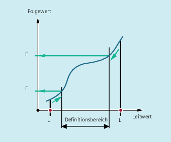
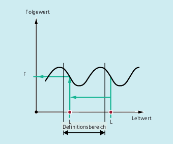

Alle Befehle zum Lesen von Kurventabellenwerten können auch in Synchronaktionen verwendet werden (siehe auch Kapitel "Bewegungssynchronaktionen").
Bei Verwendung der Befehle CTABINV, CTABTMIN und CTABTMAX ist darauf zu achten, dass:
zum Ausführungszeitpunkt ausreichend NC-Leistung verfügbar ist
oder
vor dem Aufruf die Anzahl der Segmente der Kurventabelle abgefragt wird, um gegebenenfalls die betreffende Tabelle unterteilen zu können
Liegt der angegebene <Leitwert> außerhalb des Definitionsbereichs, wird als Folgewert die obere bzw. untere Grenze ausgegeben:
Liegt der angegebene <Leitwert> außerhalb des Definitionsbereichs, wird der Leitwert Modulo des Definitionsbereichs bewertet und der entsprechende Folgewert ausgegeben:
Der Befehl CTABINV benötigt einen Näherungswert für den erwarteten Leitwert. CTABINV gibt den Leitwert zurück, der dem Näherungswert am nächsten liegt. Der Näherungswert kann z. B. der Leitwert aus dem vorherigen Interpolatortakt sein.
Die Ausgabe der Steigung (<Gradient>) ermöglicht es, die Geschwindigkeit der Leit- oder Folgeachse an der entsprechenden Position zu berechnen.
Die optionale Angabe der Leit- und/oder Folgeachse ist wichtig, falls Leit- und Folgeachse in verschiedenen Längeneinheiten projektiert sind.
Die Befehle CTABSSV und CTABSEV sind in folgenden Fällen nicht dazu geeignet, programmierte Segmente abzufragen:
Kreise oder Evolventen sind programmiert.
Fasen bzw. Runden mit CHF/RND ist aktiv.
Überschleifen mit G643 ist aktiv.
NC-Satz-Kompression (COMP...) ist aktiv.